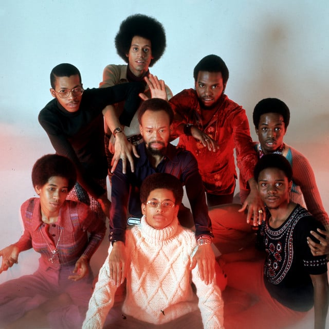

Earth, Wind & Fire
Years Active: 1969–1984, 1987–present
Genre/s: R&B, soul, funk, pop, disco, progressive soul
Label/s: Warner Bros., ARC, Columbia, Kalimba, Sanctuary
Members: Verdine White, Philip Bailey, Ralph Johnson, B. David Whitworth, Philip Bailey Jr., Myron McKinley, John Paris, Morris O'Connor, Serg Dimitrijevic, Earth, Wind & Fire Horns
Past Members: Maurice White, Fred White, Wade Flemons, Don Whitehead, Sherry Scott, Yackov Ben Israel (a.k.a. Phillard Williams), Jessica Cleaves, Ronnie Laws, Roland Bautista, Larry Dunn, Andrew Woolfolk, Al McKay, Sheldon Reynolds, The Phenix Horns, Doug Carn, Sonny Emory, Dick Smith, Vance Taylor, David Lautrec, Greg Moore, Morris Pleasure, Robert Brookins, Freddie Ravel, Daniel de los Reyes, Kimberly Brewer, Kim Johnson, Krystal Bailey, Johnny Graham
Earth, Wind & Fire (abbreviated as EW&F or EWF) is an American band formed in Chicago, Illinois, in 1969. Their music spans multiple genres, including jazz, R&B, soul, funk, disco, pop, Latin and Afro-pop. They are among the best-selling bands of all time, with sales of over 90 million records worldwide.
The band was formed by Maurice White, originating out of the Salty Peppers; its history includes a hiatus from mid-1984 to mid-1987. Prominent members have included Verdine White, Philip Bailey, Ralph Johnson, Larry Dunn, Al McKay, Roland Bautista, Robert Brookins, Sonny Emory, Ronnie Laws, Sheldon Reynolds and Andrew Woolfolk. The band is known for its kalimba sound, dynamic horn section, energetic and elaborate stage shows, and the contrast between Bailey's falsetto and Maurice's tenor vocals.
The band has won six Grammy Awards out of 17 nominations and four American Music Awards out of 12 nominations. They have been inducted into the Rock and Roll Hall of Fame, the Vocal Group Hall of Fame, the NAACP Image Award Hall of Fame, and Hollywood's Rockwalk, and earned a star on the Hollywood Walk of Fame. The band has also received an ASCAP Rhythm & Soul Heritage Award, a BET Lifetime Achievement Award, a Soul Train Legend Award, a NARAS Signature Governor's Award, a Grammy Lifetime Achievement Award, the 2012 Congressional Horizon Award, and the Kennedy Center Honors in 2019. Rolling Stone has called them "innovative, precise yet sensual, calculated yet galvanizing" and declared that the band "changed the sound of black pop". VH1 has described EWF as "one of the greatest bands".